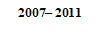
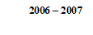
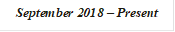
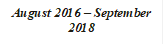
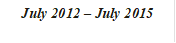

Ramzi Mousa Ahmad Bdair
+966-568178553
Email: rbdair@thiqah.sa
Riyadh – Saudi Arabia
Transferable Visa
Marital Status: Married
Education and Qualifications

Jordanian University of Science and Technology Jordan.
Bachelors of Computer Science (CS)
With GPA = (Very Good)
 Jordan
General Secondary Education Certificate Examination, With GPA = 87. 8%
(Scientific stream)
Skills & Expertise
· Agile Scrum Framework
· Docker, Containerization, Docker Swarm
· Experience with angular 7, .Net Core and SignalR
· Strong background in object-oriented programming (OOP), I have experience in designing and implementing application architectures Like Domain Driven Design (DDD).
· Experience with Microsoft .NET Core, Asp.Net Zero, .NET 4.5, ASP.NET MVC, API technologies.
· Experience in developing Web based applications and Client/Server applications using SOAP and RESTful services, C#, ASP.NET, MVC, ADO.NET, XML, JSON, HTML, JavaScript, JQuery, AJAX, Typescript and CSS.
· Strong knowledge of using the Entity Framework and LINQ.
· Experience web front end development using CSS, Bootstrap,HTML5
· Strong background in data modeling and database design concepts.
· Strong knowledge of database stored procedures (SP), triggers, and views
· Experience in Installation, Configuration, Development, Administration and Deployment activities For SharePoint 2013.
· Experience in developing SharePoint master page, custom web part, SharePoint API and SharePoint services (Search, user profile ...)
Certificates
· Certified SOA Professional
· Professional Scrum Master™ level I (PSM I)
· MCSD Web Application: Developing ASP.NET MVC Web Applications
· MCSD Web Application: Programming in HTML5 with JavaScript and CSS3
· MCTS: Web Applications Development with Microsoft .NET Framework 4.
https://mcp.microsoft.com/authenticate/validatemcp.aspx
Transcript ID (1005997) and the Access Code (ramzibdair)
Professional Experience

Thiqah Business Services
Riyadh-Saudi Arabia
Senior Software Developer
- .Net Core, Angular 7, Asp.Net Zero, MVC, Entity Framework, C# language, SQL Database, web API, Swagger, Agile Scrum Framework.
Projects:
- eMazad: is a real time application for online auction, where it is allowed bidders to bid online for the goods sold in the auction through electronic payment methods. We use in this system the following technologies:
1- ASP.Net MVC, Entity Framework, Unit Test, domain-driven design, SQL DB for portal.
2- Restful API, Swagger, Dapper ORM for mobile Application.
3- Angular 7 that used in dashboard and admin reports.
4- RabbetMQ, MassTransit to integrate with payment gateway
- Mwathiq: is a system that enables individuals and businesses to do their legal transactions through notaries accredited by the Ministry of Justice at any time and place without the need to visit the Ministry. We use in this system the following technologies:
1- ASP.Net MVC, Entity Framework, Unit Test, domain-driven design, SQL DB for portal.
2- Restful API, Swagger, Dapper ORM for mobile Application.
3- Angular 7 that used in dashboard and admin reports.
4- RabbetMQ, MassTransit to integrate with payment gateway
Pioneers outsourcing
Riyadh-Saudi Arabia
Senior Software Developer
- SharePoint, MVC, Entity Framework, C# language, SQL Database, web API, JavaScript, AJAX, and JSON.
Projects:
- Pioneers Internal site: The purpose of this Project is to automate all internal processes of the company such as (HR requests, Admin & purchases orders, Assets Management), where we used SharePoint 2013 platform to build the project and handle these processes. My duties in this project as the following:
1- Administration:
o Prepare SharePoint farm (Install the software on the servers).
o Configure SharePoint Services and fix the issues of it.
2- Development:
o Create Master page and page layouts
o Develop custom web Part
o Create workflow using SP designer and VS2012
- Cloud Integration: convert some of solutions of company to be “software as a service” SAAS. My duties in these projects are to prepare the solutions be accepting multi-tenant and integrate it with the cloud.
-
QBS (Quality Business Solutions)
Amman – Jordan
Senior Software Developer
- SharePoint 2013 and Web Application development with web form, this includes working on C# language, SQL Database, LINQ Server, web services JavaScript, AJAX, and JSON.
Projects:
- Customs: internal web application for Jordanian customs to tracking vehicles which it developed using web Form and SQL and integrated with Oracle.
- Orange: Orange Jordan website and internal web applications, which it developed using SharePoint 2013, SharePoint API and AngularJS.

IHorizons
Amman – Jordan
 Software Developer
- Web application development with MVC3 and MVC4 architecture, this includes working on C# language, JavaScript, AJAX, XML, and JSON.
- SD. (service desk), Follow up and fix all the issues that happens in the company projects, which include working on SQL Server.
- Working with third party APIs.
Projects:
- Aljazeera (www.aljazeera.net/portal) :
I've worked for ALJAZEERA project that is the biggest news website in the Middle East; More than one millions people visit it daily from different wide countries.
I was assigned to solve and work on many new features to improve the website and making it more stable and usable, and I worked on the old website, and I was part of the team who worked to change the website to the new version of it, In development pages we used the modern technology like MVC3, WebAPI, JQuery and CSS3 that give us more flexibility and control each model separately as well as, JavaScript, C#, SQL
- Doha institute (www.dohainstitute.org/portal)
Doha institute is an independent research institute for the study of the social sciences and humanities, with particular emphasis on the applied social sciences.
I was the only resource to implement this project and I was assigned to implement and development the features and services, in development I used the modern technology like MVC3, WebAPI, JQuery, CSS3, JavaScript, C#, and SQL
- Arab scientific community organization (www.arsco.org)
- مركز معلومات المصحف الشريف (www.infoquran.org/portal)
Integrated Technology Group (ITG)
Amman – Jordan
- Web application development using ASP.NET, which include working on C# language, JavaScript, AJAX, and XML.
Projects:
- EduWave (www.eduwave.elearning.jo)